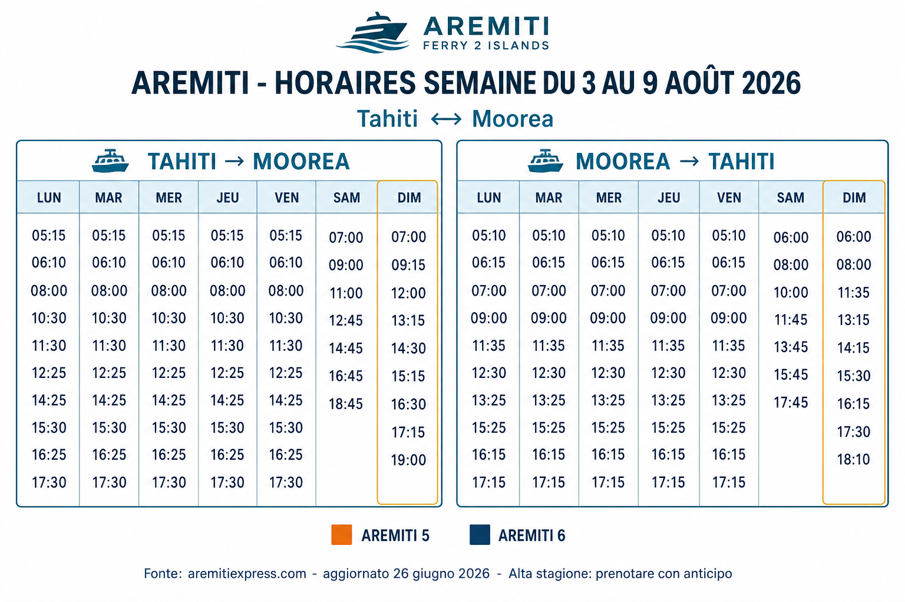
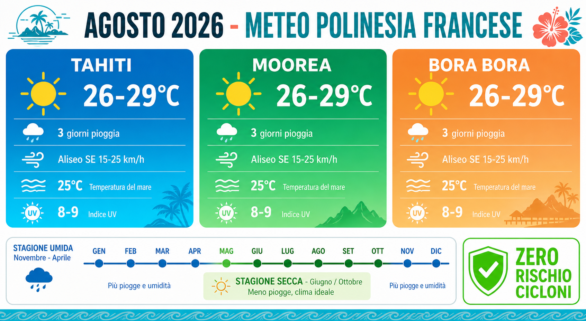

✨ SPUNTE MULTI-STATO (novità): tutte le voci con il pallino a sinistra ciclano tra 4 stati con click ripetuti:
○ Vuoto — da valutare✓ Fatto — completato❤ Mi piace — voglio farlo/rifarlo✗ Non mi piace — da escludere
Il ciclo click è: vuoto → fatto → mi piace → non mi piace → vuoto. Le spunte si salvano nell'URL della pagina: usa 🔗 Copia link in alto a destra per condividere lo stato con chi ti accompagna. In alto vedi barra progresso multi-colore e contatori per ogni stato.
💱 Cambio valuta · Polinesia francese
1 € = 119,33 XPF · fisso
Franco CFP (XPF) — moneta ufficiale di Polinesia francese, Nuova Caledonia, Wallis e Futuna. Cambio fisso con l'euro dal 1° gennaio 1999: 1.000 XPF = 8,38 €. Nessuna oscillazione di mercato: quello che vedi al ristorante è quello che paghi, senza sorprese di cambio. Emissione: Institut d'émission d'Outre-Mer (IEOM).
💵 Banconote XPF Polinesia · uso locale
500 F
≈ 4,19 €
1.000 F
≈ 8,38 €
5.000 F
≈ 41,89 €
10.000 F
≈ 83,79 €
Solo 4 tagli. La 500 F è la più usata per acquisti quotidiani (roulottes, mercato). La 10.000 F è difficile da spendere per piccole somme, richiedi resti.
🪙 Monete XPF spiccioli
5 F
≈ 0,04 €
10 F
≈ 0,08 €
20 F
≈ 0,17 €
50 F
≈ 0,42 €
100 F
≈ 0,84 €
200 F
≈ 1,68 €
Utili per il bus pubblico Te Reo, mance simboliche, mercato di Papeete. Tienile in tasca.
🇪🇺 EURO → XPF quanto ricevi
10 €
≈ 1.193 XPF
20 €
≈ 2.387 XPF
50 €
≈ 5.966 XPF
100 €
≈ 11.933 XPF
200 €
≈ 23.866 XPF
500 €
≈ 59.665 XPF
🌺 XPF → EURO spese comuni
500 F (birra locale Hinano)
≈ 4,19 €
1.500 F (poisson cru al roulotte)
≈ 12,57 €
2.030 F (biglietto Aremiti tourist)
≈ 17,01 €
5.000 F (pranzo per 2 in snack)
≈ 41,89 €
15.000 F (lagoon tour a Moorea)
≈ 125,68 €
25.000 F (4×4 safari giornata intera)
≈ 209,50 €
💡 Tip operativi:
Cambio in Italia: quasi impossibile. Cambia direttamente all'arrivo a Faa'a (Banque de Polynésie o Banque de Tahiti) o preleva al bancomat.
Carte di credito: Visa/Mastercard accettate ovunque in hotel e ristoranti. Nei roulottes e mercatini è cash only (XPF).
Bancomat: a Papeete numerosi, a Moorea/Bora Bora concentrati vicino ai porti. Nelle isole minori (Tuamotu) portati XPF cash da Tahiti.
Novità 3 luglio 2026: autorizzato il cashback (ritiro XPF cash al commerciante pagando con carta). Utile fuori dai centri.
Mance: non usanza polinesiana. Non attese in hotel/ristoranti; se lasci mancia, spiccioli sono ok.
💵 Cash budget · quanti XPF tenere in tasca a settimana
2 persone · alta stagione
Stima realistica per una coppia in un mix di resort premium + attività locali (roulottes, mercati, taxi, mance, tour cash-only). Le grandi spese (escursioni, cene resort, hotel) vanno con carta. Il cash serve per micro-transazioni quotidiane dove la carta non è accettata.
Voce di spesa cash
Freq. settimanale
Costo tipico
Totale sett.
🍽️ Roulottes (Papeete, Vaiare, Vaitape) — solo cash
All'arrivo a Faa'a: preleva subito 50.000-60.000 F al bancomat Banque de Polynésie o Socredo (in aeroporto). Costo commissione: 300-600 F.
Ricarica settimanale: a Moorea/Bora Bora prelievi ~30.000-40.000 F. Ci sono ATM a Vaiare (Moorea), Vaitape e Matira (Bora Bora).
Tagli utili: chiedi banconote da 500, 1.000, 5.000 F (le 10.000 F sono difficili da spendere ai roulottes → chiedi il resto in cassa hotel).
Cashback nuovo (dal 3 luglio 2026): ora puoi ritirare XPF direttamente al supermercato pagando con carta. Utile se un ATM è fuori servizio.
Riserva minima raccomandata sempre in tasca:10.000 F/persona per emergenze (medico privato costa 3.800 F cash-only, taxi imprevisto, ecc.).
Non cambiare tutto il budget in una volta: quello che ti avanza in EUR/USD in banca in Italia rende di più che ricambiare XPF alla fine.
💳 Accettazione pagamenti · Visa / Mastercard / contactless
% stimata per contesto
Situazione realistica per le Isole della Società (Tahiti, Moorea, Bora Bora, il tuo itinerario). Nei Tuamotu/Marchesi/Australi le percentuali crollano drasticamente. Visa e Mastercard sono lo standard universale. Il contactless è arrivato tardi in Polinesia ma ora è molto diffuso nei circuiti turistici.
Dove paghi
Visa
Mastercard
Contactless
Note
🏨 Hotel resort (IC, Cook's Bay, Royal, Le Moana)
100%
100%
~95%
POS moderni, chip+PIN o contactless
🍽️ Ristoranti resort + fine dining
100%
100%
~90%
Nessun problema con Visa/MC
🍕 Ristoranti/snack di media categoria (in città/paese)
~95%
~95%
~80%
Contactless in crescita rapida
🛒 Supermercati (Super U, Carrefour, Champion)
100%
100%
~90%
Cashback disponibile dal 3 luglio
🏪 Negozi turistici, boutique perle nere
~98%
~98%
~65%
Per perle: chiedi ricevuta dettagliata
⛴️ Aremiti / voli Air Tahiti (biglietteria)
100%
100%
~90%
Online: solo Visa/MC affidabili
🎯 Tour operator (Lagoon Service, Reef Discovery, Marama, ecc.)
~90%
~90%
~55%
Prenoti online = carta ok
⛽ Distributori benzina
100%
100%
~85%
Utile per l'auto a noleggio
🥭 Marché de Papeete / marché locali
~40%
~40%
~20%
Meglio cash sempre
🚚 Roulottes / food trucks (Place Vaiete, spiagge)
0%
0%
0%
CASH ONLY sempre
🚕 Taxi (Tahiti + Moorea + Bora Bora)
~10%
~10%
~5%
Cash quasi obbligatorio
🎨 Artigianato locale, bancarelle spiaggia
~15%
~15%
~10%
Solo bancarelle "importanti"
💡 Consigli operativi:
Carta principale consigliata: Visa o Mastercard debit/credit standard. Revolut / N26 / Wise perfette per il cambio (fisso EUR→XPF senza commissioni + notifiche in tempo reale + card virtuali).
Doppia carta consigliata: porta almeno due carte Visa/Mastercard di circuiti/banche diverse (es. 1 Revolut + 1 di banca tradizionale) come backup in caso di blocco antifrode o smagnetizzazione.
Contactless: molto diffuso in Society Islands. Apple Pay / Google Pay con carta Visa o Mastercard sottostante funzionano regolarmente nei POS moderni dei resort, ristoranti e supermercati.
Attenzione al DCC (Dynamic Currency Conversion): se il POS chiede "vuoi pagare in EUR invece che XPF?" → rispondi sempre NO. Il cambio applicato dal terminale è del 3-8% peggiore di quello fisso della banca.
Blocco carta preventivo: avvisa la tua banca in Italia della trasferta (chat/app) per evitare blocchi antifrode al primo utilizzo.
ATM: Banque de Polynésie e Banque Socredo hanno le migliori compatibilità con carte estere. Evita ATM di piccole banche minori.
🏝️ Focus escursioni degli hotel
4 resort del tuo itinerario
Panoramica delle escursioni proposte dai quattro hotel del tuo itinerario: InterContinental Tahiti Resort & Spa (Faa'a) → Cook's Bay Hotel & Suites (Moorea) → Royal Bora Bora + InterContinental Bora Bora Le Moana (Bora Bora). Per tutti: gli hotel non organizzano nulla in proprio, fanno da tramite verso operatori partner. Regola generale: quasi sempre conviene prenotare fuori, con risparmio del 20-40%.
Legenda badge prenotazione attività gratuite:FIRST-COME / LIBERO nessuna prenotazione, ma arriva presto ·
STESSO GIORNO prenota al mattino ·
1-2 GG PRIMA concierge / email ·
1 SETTIMANA PRIMA attività ad alta domanda
🏨 I 5 HOTEL DEL TUO ITINERARIO · siti ufficiali e contatti
Notti
Hotel
Sito ufficiale
Telefono
7-8/8 (1 notte)
Francisco Bay Inn San Francisco · Marina District · 1501 Lombard St
💡 Totale: 21 notti hotel + 2 notti in volo (28/8 UA 114 + 29/8 LH 455) = 23 giorni di viaggio. Tutti i link sono cliccabili dai contatti singoli anche più sotto in ogni scheda hotel.
🌺 HOTEL 1 · InterContinental Tahiti Resort & Spa
Faa'a (Tahiti) · tra aeroporto e Papeete · tappa arrivo/partenza · partner principali: Marama Tours (terra) + Activiseas (mare)
✅ Attività GRATUITE / a donazione — quando e come prenotare
🐢 Te Mana o Te Moana
Tour guidato di 1h al centro di riabilitazione tartarughe marine (ONG). Non più "gratis" dal 2023: aperto al pubblico con donazione richiesta (5-10 € consigliati). Ideale per famiglie.
A DONAZIONE
PRENOTA 1-2 GG PRIMA Come: email a reservation@temanaotemoana.org, Messenger dell'associazione, o di persona al kiosk dentro l'activity center del resort. Orari 2026: Lun-Mer-Ven 13:30 · Sab 09:30 (verifica al momento della prenotazione) Capienza:max 20 pax. In alta stagione si riempie facilmente → prenota subito all'arrivo in hotel o meglio via email prima della partenza. Cancellazione: gratuita fino a 24h prima.
🐠 Fare l'a Reserve
Lagunario naturale del resort con fauna marina locale (razze, pesci pappagallo, tartarughe). Snorkeling libero.
GRATIS ospiti
ACCESSO LIBERO Come: vai direttamente. Prendi maschera e pinne al beach kiosk (deposito documento). Nessuna prenotazione. Orari: tutto il giorno finché c'è luce. Migliore visibilità mattina 8-11 (mare più calmo, sole basso non abbaglia).
ISCRIVITI LO STESSO GIORNO Come: al check-in prendi il "weekly activity sheet" con calendario aggiornato. Iscrizione al kiosk dell'activity center il giorno stesso (poche ore prima). Capienza: gruppi da 8-15 persone. Il corso più richiesto è pareu weaving (venerdì mattina).
🏊 Piscina + jogging + padel
Piscina infinity acqua dolce, percorso jogging nei giardini, 2 campi padel outdoor (aperti da set. 2024).
GRATIS ospiti
PISCINA/JOGGING: LIBERO PADEL: PRENOTA STESSA GIORNATA Come padel: 2 campi, slot da 1h, prenotazione telefonica al concierge (+689 40 86 51 68) o all'activity center. In alta stagione conviene prenotare al mattino per giocare lo stesso giorno. Racchette: a noleggio 1.500 XPF (~12 €). Meglio portare le tue.
🍽️ 5 posti dove pranzare/cenare · zona IC Tahiti (Faa'a - Papeete)
Selezione pulita, qualità decente, prezzo contenuto per Tahiti. Include opzioni sia in zona resort che a breve taxi (10-15 min = 1.500-2.500 XPF).
💰 Legenda fasce di prezzo (spesa a persona per un pasto completo: piatto principale + bevanda/dessert): € · 1,5–3k XPF (~12–25 €)€€ · 3,5–7k XPF (~30–60 €)€€-€€€ · 5–10k XPF (~40–85 €)€€€ · 8–15k XPF (~65–125 €) Cambio riferimento: 1 € = 119,33 XPF · 1.000 XPF ≈ 8,38 €. I roulottes/food truck sono cash only.
1 SETTIMANA PRIMA Il più richiesto dei tour terrestri: Te Mana Tahiti Tours è "likely to sell out" su Viator. In agosto prenota prima di partire dall'Italia.
1-2 SETTIMANE PRIMA Solo 2 elicotteri operativi, richiestissimi. Prenota via concierge appena arrivi o direttamente sul sito. Voli mattutini più stabili (meno turbolenza).
1 SETTIMANA PRIMA Charter interi, poche barche di livello (Haura Charters, Tahiti Big Game). Partenza 05:30-06:00 dal porto di Papeete. Pesca marlin, mahi-mahi, tonno.
2+ SETTIMANE PRIMA Volo A/R + escursione. In alta stagione i voli mattutini si esauriscono presto. Sconsigliato: fai meglio 2-3 notti sull'isola invece del day-trip.
Cook's Bay, Maharepa (Moorea) · fronte laguna, vicino al porto crociere · boutique hotel · partner principali: Corallina Tours, Mana Moorea Tours, Voila Moorea, Moorea Ocean Adventures
✅ Attività GRATUITE — quando e come prenotare
🛶 Kayak & snorkeling gear
Kayak, maschere e pinne gratuiti per esplorare autonomamente Cook's Bay dalla spiaggia del resort.
GRATIS ospiti
FIRST-COME · NO BOOKING Come: vai al beach shack, firma il registro, prendi kayak/maschera. Deposito documento. Kayak: 4-6 disponibili, si esauriscono tra le 9 e le 11 del mattino nei giorni pieni. Consiglio: alza le 8:00 per assicurartene uno. Snorkel gear: quantità abbondante, sempre disponibile.
🏊 Piscina infinity Cook's Bay
Piscina infinity affacciata sulla baia iconica, con vista sui monti (Mouaputa, Mount Rotui).
GRATIS ospiti
ACCESSO LIBERO Come: vai direttamente. Nessuna prenotazione. Lettini: ~30 disponibili, si esauriscono tra le 10 e le 15. Se vuoi lettino con vista Cook's Bay, arriva entro le 9.
🎱 Game room + Le Cooks
Sala giochi interna + il rinomato ristorante-bar Le Cooks (cocktail al tramonto).
Incluso struttura
GAME ROOM: LIBERA LE COOKS · CENA: PRENOTA 1 GG PRIMA Come: per la cena a Le Cooks, prenota al ricevimento o al bar il giorno prima (specialmente per il tavolo con vista sulla baia al tramonto ~18:30). Cocktail al tramonto: arrivi 30 min prima del sunset (17:45 in agosto), senza prenotazione.
🌳 Giardini tropicali + camere con kitchenette
Suite con kitchenette complete = mangi in autonomia risparmiando sui pasti (utile in Moorea).
Vantaggio boutique
NULLA DA PRENOTARE Consiglio: fai spesa al Super U di Maharepa (5 min a piedi dal resort, aperto 8-19 lun-sab, dom mattina). Ci sono anche i roulottes serali lungo la costa e il marché di Paopao (5 min in auto verso ovest, produce fresco).
🌊 Escursioni via MARE (via concierge resort · partner Moorea)
2-3 GG PRIMA Il classico must-do di Moorea. Partenze giornaliere 09:00. In alta stagione (ago) prenota 2-3 giorni prima; su Viator "likely to sell out".
1 SETTIMANA PRIMA Il top-rated di Moorea (piroga tradizionale, ukulele a bordo, tiki sommersi, cucina locale sul motu). "Likely to sell out" da anni. In agosto prenota subito.
1-2 GG PRIMA Serve brevetto (OWD minimo). Se non sei brevettato, chiedi il "baptême de plongée" (~11.000 XPF).
🍽️ 5 posti dove pranzare/cenare · zona Cook's Bay / Maharepa (Moorea)
Cook's Bay è la zona più densa di ristoranti a Moorea. Molti a piedi o a max 10 min di taxi. Approfitta della kitchenette in camera per colazioni/pranzi leggeri con spesa al Super U di Maharepa.
1 SETTIMANA PRIMA FranckyFranck ha 858 recensioni 4,9/5, top operatore Moorea. Sold-out cronico. In agosto prenota via Viator subito. Include ananas plantation + rum distillery.
2-3 GG PRIMA Sentiero moderato, panorama su Cook's + Opunohu Bays. Puoi farlo senza guida gratis se sei esperto (mappa AllTrails). Con guida include storia e botanica locale.
1-2 GG PRIMA Tavoli fronte laguna richiestissimi. Prenota via telefono/email il giorno prima. Cena polinesiana con musica dal vivo (mar-ven).
🌐 mooreacooksbay.com ↗ · Cook's Bay Hotel & Suites · +689 40 55 41 00 · a 15 min dal porto Vaiare e dall'aeroporto Temae
💜 HOTEL 3 · Royal Bora Bora
Matira (Bora Bora main island) · giardino tropicale a passi da Matira Beach (una delle spiagge pubbliche più belle del mondo) · boutique · nessun trasferimento in barca · partner principali: Moana Adventure Tours, Lagoon Service, Reef Discovery
✅ Attività GRATUITE — quando e come prenotare
🛶 Kayak & snorkel gratis
Kayak e attrezzatura da snorkeling gratuiti per esplorare la laguna dalla spiaggia dell'hotel. Matira Beach a 5 min a piedi.
GRATIS ospiti
FIRST-COME · NO BOOKING Come: chiedi al front desk o direttamente al beach staff. Deposito documento. ⚠️ Attenzione Bora Bora: "Activities on Bora Bora typically fill in advance" (segnalazione Reddit). I kayak si esauriscono entro le 9-10 del mattino in alta stagione. Alzati presto. Snorkel gear: quantità limitata, meglio portare la propria maschera se sei esigente.
🚲 Bike rental (incluse e-bike)
Biciclette gratuite per girare l'isola principale. Perfetto per raggiungere ristoranti e il porto di Vaitape (12 km).
GRATIS ospiti
PRENOTA LO STESSO MATTINO Come: chiedi al front desk al mattino per la giornata. Le e-bike sono molto più richieste delle tradizionali (Bora Bora ha alcune salite verso Anau) e si esauriscono presto. Consiglio: per il giro completo dell'isola (32 km, 3-4h) parti entro le 8. Bevi molto, porta acqua e cappello.
🏊 Piscina outdoor + Matira Beach
Piscina fronte spiaggia + accesso diretto alla laguna. La spiaggia più bella dell'isola (Matira) è pubblica e gratuita.
GRATIS ospiti
ACCESSO LIBERO Matira Beach: spiaggia pubblica gratuita, 5 min a piedi dal resort. Zone d'ombra: prime file di palme sul lato ovest. Nessun servizio, porta acqua e telo. Piscina hotel: lettini limitati, arriva entro le 9 per assicurartene uno.
🎶 Musica polinesiana dal vivo
Intrattenimento serale con gruppi di musica tradizionale al bar/ristorante (in date selezionate). "Island Original Travel Badge".
Incluso struttura
CENA CON MUSICA: PRENOTA 1 GG PRIMA Come: chiedi al ricevimento il weekly entertainment schedule. Le serate con musica dal vivo sono 2-3 volte a settimana (in genere gio-ven-sab). La cena si riempie: prenota il tavolo il giorno prima. Bere qualcosa al bar: nessuna prenotazione, arrivi 30 min prima dell'inizio (di solito 19:00).
2 SETTIMANE PRIMA La top experience di Bora Bora. Outrigger canoe tradizionale, ukulele a bordo, pranzo tahitiano su motu. "Likely to sell out". Prenota prima di partire dall'Italia.
2-3 GG PRIMA Cammini sul fondo con casco pressurizzato fino a 3-4 m. No brevetto richiesto, no occhiali/lenti richieste (respiri normalmente). Adatto a chi non è ancora comodo con maschera-boccaglio.
🍽️ 5 posti dove pranzare/cenare · zona Royal Bora Bora (Matira Point)
Matira Point è la zona ristorante più vivace di Bora Bora. Tutti raggiungibili a piedi o con e-bike gratuita dell'hotel. Alternative locali molto più economiche dei ristoranti dei grandi resort sui motu.
Il migliore per rapporto qualità/prezzo/vista. Tavoli fronte laguna, sabbia sotto i piedi. Poisson cru + mahi-mahi grigliato. Arriva prima delle 18 per tavolo vista
1 SETTIMANA PRIMA 521 recensioni 5/5 su Viator. Panorami mozzafiato dalla cima di Anau. In agosto molto richiesta, prenota su Viator con largo anticipo.
1-2 SETTIMANE PRIMA 1 elicottero su Bora Bora. Voli mattutini (7-9) più stabili. Prenota via concierge appena arrivi o online. In agosto sold-out cronico.
2-3 GG PRIMA Piccola auto elettrica scoperta per giro isola (32 km). Patente base valida. Batteria per ~40 km, ricarica a Vaitape. Divertente ma velocità ridotta.
🌐 royalborabora.com ↗ · Matira · nessun transfer in barca (main island) · Island Original Badge · e-bike a disposizione
🐚 HOTEL 4 · InterContinental Bora Bora Le Moana Resort
Matira Point (Bora Bora main island) · overwater bungalows fronte Mont Otemanu · sister-property di IC Thalasso · partner principali: Moana Adventure Tours, Reef Discovery, spa a IC Thalasso (Deep Ocean Spa)
PRENOTA AL MATTINO Come: water sports center in spiaggia, apre 8:00. Firmare registro + deposito documento. Uscite tipiche 30-90 min per volta. ⚠️ Bora Bora fa presto sold-out: SUP e outrigger canoe sono richiestissimi. Arriva entro le 8:30 per assicurartene uno nel picco stagione (agosto). Kite surf / parasailing: a pagamento, prenotazione via concierge il giorno prima.
🐠 Snorkeling reef sotto i bungalow
Coral garden e pesci tropicali direttamente sotto la scala del bungalow overwater. Snorkel + mask + fins forniti.
GRATIS ospiti
ACCESSO 24/7 Come: attrezzatura in camera o al water sports center. Zero prenotazione: scendi la scala del tuo overwater, sei già in acqua. Miglior orario: 8-10 mattina (mare calmo, sole basso non abbaglia, pesci attivi al feeding). Evita 12-14 (sole verticale abbaglia sul fondo bianco). Tip: il coral garden migliore è tra la Concierge Lounge e i bungalow n. 400. Portati scarpine da scoglio.
🏓 Giochi indoor (ping pong, biliardo)
Sala giochi per i pomeriggi piovosi. Attività per famiglie e coppie.
GRATIS ospiti
ACCESSO LIBERO Come: game room aperta 9-21, first-come first-serve. Sono 1 tavolo ping pong + 1 biliardo, quindi in ore di picco (16-18) attesa possibile. Racchette/palline: incluse.
🎨 Handicraft demonstrations
Dimostrazioni di artigianato polinesiano (intreccio pareu, monoi, ukulele). Calendario in reception.
GRATIS ospiti
ISCRIVITI IL GIORNO STESSO Come: weekly activity sheet al check-in. Iscrizione al concierge lo stesso giorno (mattino) per l'attività del pomeriggio. Capienza: gruppi ~10 pax. Le classi più popolari (pareu tying, monoi making) si esauriscono entro le 11. Tip: combina la classe di intreccio pareu con l'acquisto di uno all'hotel gift shop.
2 SETTIMANE PRIMA Barca privata per gruppo (fino a 6 pax). Massima flessibilità di itinerario. Prezzo per barca, non per persona → conviene se siete in 4-6.
2-3 GG PRIMA 3 opzioni diverse: helmet dive (3-4 m, no brevetto) · subscooter (scooter sub 5-8 m) · submarine (fino a 50 m, esperienza esclusiva più cara). Adatte a non-swimmers.
1-2 SETTIMANE PRIMA Charter interi. Partenza 05:30 alba. Pesca marlin, mahi-mahi, tonno. Poche barche di livello a Bora Bora.
🍽️ 5 posti dove pranzare/cenare · zona IC Le Moana (Matira Point)
Le Moana condivide la zona con Royal Bora Bora (entrambi su Matira Point). La lista è mirata a chi cerca opzioni più "resort-adjacent" e valide sia per pranzo che per cena con vista.
Migliore fusione qualità/prezzo/vista tra tutte le opzioni Matira. Fronte laguna, atmosfera rilassata, prezzi ragionevoli per Bora. Arriva prima delle 18
1-2 GG PRIMA Esclusiva ospiti IHG: shuttle gratuito Le Moana → Thalasso, poi trattamenti con acqua di profondità (500m). Best-seller "Deep Sea Water Wrap". Prenota via concierge Le Moana.
⚠️ Nota Le Moana: essendo un IHG resort su Matira Point (main island, non su motu), non serve transfer in barca come per la sister property IC Thalasso (su motu). Vantaggio pratico: puoi andare a piedi/e-bike ai ristoranti locali di Matira, cosa impossibile dai resort su motu.
💰 Conviene prenotare FUORI dal resort? Quasi sempre SÌ (vale per tutti e 4)
🟢 Risparmio tipico prenotando fuori: 20-40% sulla maggior parte delle escursioni. Per una coppia con 5-6 escursioni tipiche sui 4 hotel: risparmio totale 500-800 € (circa il costo di 1 notte overwater a Bora Bora).
Le 4 opzioni migliori dove prenotare fuori (valide per Tahiti + Moorea + Bora Bora):
Bora Bora: Quai de Vaitape (porto principale), tour desk indipendenti al pontile crocieristi.
⚠️ Quando invece conviene passare dal concierge:
Attività resort-specifiche già gratuite (tartarughe IC Tahiti, kayak Cook's Bay/Royal, snorkeling reef Le Moana)
Charter privati premium (elicottero, big-game fishing, submarine dive Le Moana) → i resort hanno accordi con operatori selezionati
Alta stagione + resort sold-out: se il tour è "likely to sell out" (Lagoon Service Bora, Tiki Tour Moorea), il concierge ha spesso posti riservati
Boutique hotel come Cook's Bay e Royal Bora Bora: ottimi rapporti con operatori locali di piccola scala, tour più autentici
💡 Raccomandazione operativa per il tuo viaggio (4 hotel):
Tahiti (IC Tahiti): gratis tartarughe + Fare l'a Reserve. 4×4 su Viator (Albert Tours 50 €).
Moorea (Cook's Bay): gratis kayak e snorkeling. Tiki Tour su Viator (~126 $). Kitchenette in camera per risparmiare sui pasti (Super U Maharepa a 5 min).
Bora Bora (Royal): gratis kayak + bike + Matira Beach a piedi. Per il lagoon: Lagoon Service full day (177 $) è la top esperienza dell'isola.
Bora Bora (Le Moana): gratis snorkeling reef sotto i bungalow + SUP + canoa. Se cerchi qualcosa di iconico e non troppo caro: Reef Discovery half day (139 $, 1.007 recensioni). Per il "wow": submarine dive al concierge (esclusiva).
REGOLA GENERALE: non prenotare mai escursioni per un'isola diversa da quella dove alloggi (markup doppio). Prenota on-island.
Prezzi indicativi 2026 in XPF (1 € ≈ 119 XPF, cambio fisso). Viator prezzi in USD/EUR.
OperativoSettimana 3 – 9 agosto 2026 · ⭐ Partenza ven 7
🚢 AREMITI · l'operatore di riferimento sulla tratta

Stato Aremiti: servizio regolare nella settimana della tua traversata (venerdì 7 agosto partenza da Bologna via Zurigo + San Francisco → arrivo a Papeete sabato 8/8 sera → traghetto Tahiti-Moorea programmato per MERCOLEDÌ 12 AGOSTO secondo la tua agenda). Flotta operativa: Aremiti 5 (697 passeggeri + 30 auto, ~30 min) e Aremiti 6 (capacità maggiore, ~30 min). Frequenza feriale (lun-ven) di circa 10 corse/giorno per senso, dalle 05:15 alle 17:30 da Tahiti, dalle 05:10 alle 17:15 da Moorea. Sabato e domenica orari ridotti (7-9 corse: prima 07:00, ultima 19:00). Biglietti validi 360 giorni, utilizzabili su entrambe le navi. Fonte: aremitiexpress.com. ✅ Operatore: Aremiti — biglietto aperto 360 gg x2 già acquistato, procedura giorno G nella guida traghetti v.15.
📈 Occupazione stimata · settimana 3-9 agosto 2026 (la tua, con partenza da Bologna venerdì 7 + stopover SF)
⚠️ Nota metodologica: i siti dei traghetti polinesiani non espongono pubblicamente la % di occupazione in tempo reale (mostrano solo "disponibile / pieno" al checkout). I dati sotto sono stime basate su pattern storici di alta stagione (luglio-agosto), report di TripAdvisor/Reddit 2025, capacità nominale delle navi e finestra Heiva. Considerali un'indicazione di tendenza, non un dato ufficiale.
Aremiti — passeggeri a piedi · tratta Tahiti → Moorea
Lun 3 ago 70%
Picco: 10:30 e 17:30Pieno effetto Heiva
Mar 4 ago 73%
Picco: 11:30 e 16:25Crocieristi MSC in scalo
Mer 5 ago 75%
Picco: 10:30, 12:25, 17:30Media settimanale
Gio 6 ago 78%
Picco: 10:30 e 15:30In risalita verso weekend
⭐ VEN 7 AGO · PARTENZA BLQ→ZRH→SFO 85%
Volo LX 1669 BLQ→ZRH poi LX 38 ZRH→SFOArrivo Papeete sabato 8 sera (UA 115)
Sab 8 ago · Arrivo PPT 90%
Solo 7 corse (orari ridotti)Sold-out su 09:00 e 12:45
Dom 9 ago · Notte 1 InterCon Tahiti 82%
Solo 9 corse (orari ridotti)Riposo post jet-lag
Aremiti — corsie auto (posti veicoli)
Lun-Gio 3-6 ago 85-92%
Prenotare 48-72h primaAremiti 5 più stretto, Aremiti 6 preferibile
Ven-Dom 7-9 ago · ⭐ 95-100%
QUASI SOLD-OUTPrenotare almeno 5-7 giorni prima della partenza
0-50% libero 50-65% medio 65-85% affollato 85-100% quasi pieno sold-out probabile
✅ Il tuo biglietto Aremiti è già acquistato (x2 persone): è un biglietto aperto valido 360 giorni, utilizzabile su qualsiasi corsa di Aremiti 5 o Aremiti 6, in entrambe le direzioni. Non serve prenotare orario/posto: Aremiti non lo consente per i passeggeri pedoni (solo per veicoli). Ti presenti al terminale 30-45 min prima della corsa che vuoi prendere, mostri il QR e sali.
📅 Traversata CONFERMATA dall'agenda utente: MERCOLEDÌ 12 AGOSTO (feriale, dopo 4 notti a Tahiti — jet-lag ampiamente smaltito). Corse consigliate mattina: 09:15 (Aremiti 6, più veloce, ~30 min) o 12:25 (A5/A6). Occupazione mercoledì storicamente ~55-70% per pedoni — non c'è rischio "posto esaurito".
⚠️ Se qualcuno viaggia con auto: per i veicoli l'occupazione è invece 85-92% ven-dom → in quel caso sì, servirebbe prenotazione veicolo online. Per te (a piedi), zero preoccupazioni.
💡 Prossima azione: vedi guida_check_traghetti.html v.7 (aggiornata oggi) con procedura giorno G + orari 10-16 agosto + coordinamento transfer hotel.
Le Daily Tahiti 🌺 Daily brief Polinesia Francese · Pre-trip edition
Martedì 4 agosto 2026 N° 21 · Anno I
🗓️ AGENDA UFFICIALE UTENTE: partenza Bologna BLQ venerdì 7 agosto via Zurigo (Swiss LX 1669 + LX 38) + San Francisco (stopover 1 notte al Francisco Bay Inn), arrivo Papeete sabato 8/8 alle 18:55 con United UA 115. Soggiorno di 23 giorni fino al 30 agosto: IC Tahiti 4 notti (8-12/8) → ferry Aremiti Tahiti-Moorea mercoledì 12/8 → Cook's Bay Hotel Moorea 6 notti (12-18/8) → volo Air Moana NM918 martedì 18/8 → Royal Bora Bora 6 notti (18-24/8) → trasferimento a Matira Point → IC Le Moana 2 notti overwater (24-26/8) → volo Air Moana NM914 mercoledì 26/8 → IC Tahiti 2° soggiorno 2 notti (26-28/8). Rientro triplo UA 114 → LH 455 → LH 286 (28-30/8). Countdown 3 giorni alla partenza.
3
Giorni alla partenza · 7 agosto
25°
Mare a Moorea oggi
99%
Hotel Bora Bora già pieni ad agosto
3
Giorni di pioggia attesi ad agosto
🗓️ IL TUO ITINERARIO ESATTO · 7-30 agosto 2026 (23 giorni · 22 notti)
Fonte: agenda ufficiale utente aggiornata al 30 dicembre 2025. Voli, hotel, ferry e transfer confermati. Nel workspace tutti i documenti sono ora ricalibrati su questa timeline.
🛫 Air Moana NM918 Moorea (MOZ) 10:35 → Bora Bora (BOB) 11:25 · 50 min
Royal Bora Bora
MER 19/8
BORA BORA 0 · primo giorno pieno
Royal Bora Bora
GIO 20/8
BORA BORA 1
Royal Bora Bora
VEN 21/8
BORA BORA
Royal Bora Bora
SAB 22/8
BORA BORA
Royal Bora Bora
DOM 23/8
BORA BORA
Royal Bora Bora
LUN 24/8
TRASFERIMENTO tra hotel Royal → IC Le Moana (stessa isola, entrambi a Matira Point, ~5-10 min taxi ~1.500 XPF)
InterContinental Bora Bora Le Moana (notte 1 di 2)
MAR 25/8
BORA BORA · giornata al IC Le Moana · overwater experience
IC Le Moana (notte 2 di 2)
MER 26/8
🛫 Air Moana NM914 Bora Bora (BOB) 15:15 → Papeete (PPT) · 50 min
InterContinental Tahiti (2° soggiorno)
GIO 27/8
TAHITI 2 · ultimo giorno pieno in Polinesia
IC Tahiti
⭐ VEN 28/8
🛫 UA 114 PPT 21:10 → SFO 08:15 (+1)
In volo notturno
SAB 29/8
🛫 LH 455 SFO 14:40 → FRA 10:25 (+1) · attraversamento data line
In volo notturno
DOM 30/8
🛫 LH 286 FRA 16:20 → BLQ 17:50 · RIENTRO A BOLOGNA
🏠 Casa
✅ NOTA · Ferry Tahiti-Moorea del 12 agosto: operatore Aremiti. Il biglietto aperto Aremiti 360 gg x2 (già acquistato) va usato mercoledì 12 agosto. Vedi guida_check_traghetti.html per procedura giorno G e orari corse.
🔍 VERIFICA ORARI VOLI (ricontrollata il 28/7 con FlightRadar/Planemapper):
LX 1669 BLQ→ZRH del 7/8: la tua agenda dice "10:45 10:25 – 12:00 11:40" (sembra correzione dell'utente). I dati Planemapper per lo stesso volo nelle settimane 25/7-12/8 mostrano orario standard 10:40 → 11:55 (Airbus A220-300). La differenza di ~15 min è nella tolleranza normale. Verifica sulla tua carta di imbarco definitiva: se dice 10:25→11:40, quello vale; se dice 10:40→11:55, quello vale. In ogni caso, arriva a BLQ 2h prima (8:30-8:45).
Transit ZRH: se LX 1669 arriva alle 11:40-11:55 e LX 38 parte alle 13:15 → transit di 1h20-1h35. Stretto se BLQ→ZRH ritarda. Se sei Star Alliance Gold, usa il fast track per i controlli USA-bound.
UA 115 SFO→PPT sabato 8/8: 13:25→18:55 (8h30 di volo, arrivo notturno a Papeete). Confermato standard United.
Air Moana NM918 MOZ→BOB del 18/8: 10:35→11:25 (50 min) — confermato dai database aerei wego/trip.com per il martedì.
Air Moana NM914 BOB→PPT del 26/8: 15:15→~16:15 (50 min) — orario da tua agenda, verifica su airmoana.pf o app 3 giorni prima.
UA 114 PPT→SFO ven 28/8: 21:10→8:15 (+1) — attraversamento data line, atterri al mattino di sabato 29.
LH 455 SFO→FRA sab 29/8: 14:40→10:25 (+1). Attesa a SFO 6h15 — lounge Star Alliance United Club consigliata (accesso incluso con Business, con status Gold, o 59 USD day pass).
LH 286 FRA→BLQ dom 30/8: 16:20→17:50 (1h30 di volo). Attesa FRA 5h55 — lunga ma gestibile con la lounge Lufthansa.
💡 Considerazioni operative sull'itinerario:
SFO stopover 7-8 agosto: aggiunge un livello di jet-lag ma dà 1 notte di riposo prima del volo lungo su Papeete. Ottima scelta strategica. Ricorda l'ESTA obbligatoria per l'ingresso USA (~21 USD, esta.cbp.dhs.gov). Il Francisco Bay Inn è al 1501 Lombard Street, vicino al Golden Gate, ~30 min taxi SFO airport → hotel.
Volo UA 115 SFO→PPT sabato 8: 8h 30min di volo, arrivo alle 18:55 locali (buio già calato in Polinesia). Cena leggera in hotel + sonno subito.
Itinerario "3 isole + doppia Tahiti": Tahiti 4 notti → Moorea 6 → Bora Bora 8 (7 Royal + 1 Le Moana) → Tahiti 2. È un ottimo bilanciamento: Tahiti sia in ingresso (jet-lag + Salon Rentrée) sia in uscita (relax pre-volo lungo).
Volo Moorea → Bora Bora 18/8: Air Moana NM918 in orario confermato dai database wego/trip.com (partenza lunedì regolare 10:35, arrivo 11:25). ETA transfer Cook's Bay → aeroporto Moorea (Temae) = ~30 min taxi.
IC Le Moana 2 notti 24-26/8: due notti overwater bungalow a Matira Point come conclusione del soggiorno a Bora Bora. Il trasferimento dal Royal è la sera del 24/8 (lunedì) — ~5-10 min di taxi (~1.500 XPF) tra i due hotel vicini. IC Le Moana ha accesso diretto alla laguna con bungalow su palafitte — sarà l'apoteosi del viaggio.
Rientro via SFO + Francoforte: 3 tratte totali (PPT-SFO 8h + SFO-FRA 11h + FRA-BLQ 1h30). ~40 ore in movimento con 2 attese aeroportuali (SFO 6h15, FRA 5h55). Sconsigliato prendere hotel a FRA: passa nella lounge Star Alliance.
★ Prima pagina – aggiornamenti operativi del 4 agosto
Sezione focalizzata solo sulle informazioni operative utili al tuo viaggio. Cronaca e politica polinesiana escluse per snellezza.
📅 Milestone imminenti pre-partenza
Giovedì 6 agosto - domenica 9 agosto: SALON DE LA RENTRÉE, SPORTS & LOISIRS al Parc Expo Mamao (Papeete). Coincide col tuo arrivo sabato 8/8 sera. Ottima immersione culturale non impegnativa per domenica 9 agosto (giorno di adattamento jet-lag). Consigliato tardo pomeriggio 16-19h. Il Nu'uroa Fest del 31/7-1/8 è ormai concluso.
Giovedì 6 agosto - domenica 9 agosto: SALON DE LA RENTRÉE, DES SPORTS & DES LOISIRS al Parc Expo Mamao a Papeete. Coincide con il tuo arrivo sabato 8 sera. Ottima immersione culturale non impegnativa per la domenica 9 agosto (giorno di adattamento jet-lag). Consigliato tardo pomeriggio 16-19h.
Venerdì 7 agosto (T-0): LA TUA PARTENZA DA BOLOGNA ✈️ — BLQ 10:25 → ZRH → SFO 16:15. Prima notte al Francisco Bay Inn, poi sabato 8 UA 115 SFO 13:25 → PPT 18:55.
Sabato 15 agosto (Ferragosto): festa dell'Assunzione, festa nazionale francese anche in Polinesia. Sarai a Moorea. Molti negozi/uffici chiusi la mattina, aperti dal pomeriggio. Buon giorno per una giornata rilassata in laguna o al Belvédère di Opunohu (aperto).
📋 Stato operativo (aggiornamenti routine)
🌤️ Meteo: settimo giorno consecutivo di tempo stabile sulle Society. Alisei di E-SE regolari a 15-20 km/h, sole prevalente, temperature 25-26°C. Nessuna vigilanza meteo attiva. Il pattern di alta stagione secca è pienamente installato — meteo ideale attesa per il tuo soggiorno del 7-30 agosto.
⛴️ Traghetto Aremiti: ✅ biglietto x2 già in mano (aperto 360gg, nessuna prenotazione posto per pedoni). Traversata mercoledì 12/8 confermata da agenda. Guida traghetti v.13 con orari verificati, procedura giorno G, transfer hotel.
✈️ Voli: tutti i voli in agenda (LX 1669, LX 38, UA 115, NM918, NM914, UA 114, LH 455, LH 286) confermati sui pattern storici. Verifica orari nel box "🔍 Verifica orari voli" più sotto.
🍽️ Newrest (catering voli): produzione a Faa'a operativa, catering voli internazionali garantito. Nessuna preoccupazione per il tuo UA 115 dell'8/8.
Meteo Bollettino del 4 agosto e outlook viaggio
✅ Settimo giorno consecutivo di tempo stabile sulle Society Islands. Il pattern di alta stagione secca è pienamente installato e sta funzionando in modo esemplare — l'unico "colpo di coda" delle intemperie di metà luglio è ormai completamente archiviato. Alisei di E-SE dominanti a 15-20 km/h, cielo prevalentemente sereno con velature deboli sui rilievi interni nel pomeriggio, mare da poco mosso a leggermente mosso, temperature diurne stabili intorno a 25-26°C, notti a 21-22°C. La settimana 28 luglio - 3 agosto è prevista con lo stesso identico profilo — Météo France Polynésie non segnala alcun sistema perturbato in avvicinamento dal Pacifico Sud fino ai primi di agosto. Nessuna vigilanza meteo attiva su alcun arcipelago delle Society Islands.
Oggi 28 luglio · panoramica arcipelagi (fonte Météo France Polynésie):
Tahiti (Papeete, Faa'a, Punaauia, Teahupoo): sole prevalente per tutta la giornata, qualche cumulo sui rilievi interni (Aorai, Mont Marau) dal pomeriggio. Vento moderato E-SE 15-20 km/h (aliseo tipico). Mare poco mosso da SE. Temperature 25-26°C il giorno, 21-22°C la notte. UV indice 10 (estremo) al picco solare tra 11:00 e 15:00.
Moorea: stesse condizioni di Tahiti. Fenomeno tipico dell'alta stagione: nuvole si addensano sui rilievi Belvédère di Opunohu nel pomeriggio ma il cielo lagunare resta limpido. Ideale per giornate in spiaggia.
Bora Bora / Sottovento (Raiatea, Tahaa, Huahine, Maupiti): tempo sereno, aliseo E-SE 15-20 km/h. Mare poco mosso nella laguna, moderato all'esterno del reef. Lagoon tour operativi al 100%. Condizioni eccellenti per snorkeling nel Coral Garden e visita ai motu.
Tuamotu: tempo secco e ventilato su tutto l'arcipelago. L'instabilità dei giorni scorsi (Manihi-Fangatau-Reao) si è dissipata.
Australi (Rapa, Rurutu, Tubuai): sole e freschezza (~20°C il giorno, 15-16°C la notte). Vento moderato SE. Da notare che è la stagione delle megattere anche qui, con Rurutu tra i punti più densi di avvistamenti da terra.
Marchesi (Nuku Hiva, Hiva Oa, Ua Huka): soleggiato con ambiente più asciutto e fresco. Aliseo leggero.
Tramonto a Papeete: 17:56. Alba: 06:15. Mare a Moorea: 25°C. Tahiti oggi: 25-26°/22°, sereno con aliseo, mare 25°C. Domani (29 luglio, mercoledì): conferma del trend, condizioni identiche. Prossimi 10 giorni (28/7 - 7/8): stabilità confermata fino alla tua partenza da Bologna (7 agosto), aliseo regolare, nessun sistema perturbato in avvicinamento. Il tuo arrivo a Papeete sabato 8 agosto avverrà quasi certamente sotto un cielo prevalentemente sereno con temperature 25-27°C — condizioni ideali per il primo bagno in laguna.
💡 Prospettiva per il tuo viaggio (7-30 agosto, T-3 alla partenza): agosto è statisticamente il mese più asciutto e ventilato dell'anno in Polinesia francese. Il pattern climatologico prevede ~3-4 giorni di pioggia in tutto il mese (concentrati in piovaschi brevi pomeridiani), aliseo dominante di SE a 15-25 km/h, mare 25-26°C, UV indice 9-10 al picco. Zero rischio cicloni (stagione ciclonica va da novembre ad aprile). Le intemperie del 15-17/7 sono state l'ultimo colpo di coda della transizione stagionale, non l'inizio di una tendenza. La proiezione per il tuo soggiorno è meteo ideale con predominanza di sole. Il consiglio: porta una felpa leggera per le sere sulla veranda del bungalow (a Bora Bora l'aliseo di sera fa "fresco") e un k-way ultraleggero per gli eventuali piovaschi pomeridiani.
26°
Papeete oggi
27°
Moorea oggi
28°
Bora Bora oggi
25°
T° mare
SE 18
Vento km/h
UV 8
Indice UV
Outlook agosto 2026
Isola
Max / Min
Pioggia mensile
Vento
Sensazione
Papeete
26° / 22°
~65–93 mm (3 gg)
Aliseo SE 15–20
Ottimo
Moorea
27° / 22°
~70 mm
SE 15–25
Ottimo
Bora Bora
28–29° / 23°
~40–60 mm
E/SE, fino 35
Perfetto
Trend confermato: agosto resta storicamente il mese più asciutto e ventilato dell'anno, zero rischio cicloni. La settimana passata di giugno è stata coerente con le medie.

Fig. 1 – Dashboard meteo agosto 2026 per le tre isole principali
Sezione ridotta all'essenziale per il viaggio: rete sanitaria delle isole del tuo itinerario, numeri di emergenza, kit medico da preparare, note vaccinazioni.
🏥 Rete sanitaria delle tue isole (Tahiti · Moorea · Bora Bora)
Isola
Struttura
Capacità
Tahiti
CHPF Taaone (Pirae)
Ospedale di riferimento, urgenze 24/7, tutte le specialità
Piccolo, urgenze base + medicina generale. Trasferimenti rapidi a Tahiti via ferry o elicottero
Bora Bora
Hôpital Vaitape
Centro medico essenziale, urgenze base. Casi gravi evacuati a Tahiti via volo (~50 min)
Numeri utili 24/7:15 SAMU (urgenze mediche) · 17 Gendarmerie · 18 Pompieri · 112 numero europeo unico. Farmacie di guardia consultabili su tahitipharmacie.pf. La maggior parte dei resort ha medico convenzionato in 30 min.
Assicurazione viaggio: per patologie gravi/complesse (infarto, ictus, traumi maggiori) è probabile un'evac sanitaria verso Nuova Zelanda, Australia o Francia. Verifica di avere copertura evacuazione >500.000 €.
💊 Cosa mettere nel kit medico
Repellente DEET 30%+ o icaridina 20% (più efficace di prodotti locali)
Sunscreen reef-safe SPF 50+ (Stream2Sea, Badger, Manda — comprato in Italia, costa 3x in loco)
Antinfiammatorio + paracetamolo (NB: in caso sospetta dengue solo paracetamolo, NO ibuprofene/aspirina)
Antidiarroico + sali reidratanti
Cerotti impermeabili (essenziali se cammini in valli o cascate)
Disinfettante per ferite (soprattutto se ti graffi su corallo)
Crema cortisonica leggera (punture, eruzioni)
Eventuali farmaci cronici in quantità doppia, prescrizione in inglese/francese
Vaccinazioni: nessuna obbligatoria. Raccomandate: antitetanica aggiornata, epatite A. Febbre gialla obbligatoria solo se transiti >12h in paese a rischio (non è il tuo caso — scalo USA).
🛫 LH 455 SFO 14:40 → FRA 10:25 (+1) · attraversamento data line
In volo
DOM 30 AGO
🛫 LH 286 FRA 16:20 → BLQ 17:50 · RIENTRO A BOLOGNA
🏠 Casa
Tip del giorno Cosa fare oggi per il tuo viaggio
❌ ETIS: non è più richiesto (era il modulo sanitario COVID, disattivato dal 28 marzo 2022). Per cittadini italiani/UE nessuna registrazione online per la Polinesia. Attenzione: se il volo transita negli USA, serve l'ESTA (~21 USD, esta.cbp.dhs.gov).
Verificare le date del Multi-Island Air Tahiti Pass: il "Bora Bora Pass" copre Moorea + Huahine + Raiatea/Tahaa + Bora Bora e va prenotato in coordinamento con il volo intercontinentale.
Comprare sunscreen reef-safe: in Polinesia le creme con oxybenzone/octinoxate sono vietate per legge. Marche ok: Stream2Sea, Badger, Manda.
Kit pre-partenza ✅ Repellenti · KIT COMPLETATO
✅ Repellenti anti-zanzare acquistati: l'utente conferma di aver acquistato i 5 prodotti selezionati (Jungle Formula spray + roll-on, Autan Tropical, Foille Extra Strong, Alontan Extreme). Sezione dettaglio prodotti rimossa dal daily brief perché non più operativa.
💡 Promemoria d'uso in Polinesia:
Applica SOLO DOPO la crema solare reef-safe (aspetta ~15 min di assorbimento)
Riapplica ogni 4-8 ore (più frequentemente dopo bagno o sudorazione intensa)
Evita contorno occhi, bocca, ferite. Per il viso applica con le mani, non spray diretto
Roll-on Jungle Formula è l'unico OK bagaglio a mano (non spray). Gli altri vanno in stiva.
Braccialetti citronella e ultrasuoni sono scientificamente inutili contro zanzare tropicali
Consigli finali 🎁 30 consigli personali per il tuo viaggio (T-3 · itinerario 23 giorni)
Selezione riscritta ex-novo il 4 agosto 2026 dopo aver ricevuto l'agenda esatta. Ordinata sul tuo itinerario reale: Bologna → Zurigo → San Francisco (1 notte) → Papeete → Tahiti (4 notti) → Moorea (6) → Bora Bora (7 Royal + 1 Le Moana) → Tahiti (2) → San Francisco → Francoforte → Bologna. Ogni consiglio è pensato per far risparmiare tempo, denaro, o per rendere l'esperienza più autentica.
🗓️ Blocco 1 · Ultimi 3 giorni pre-partenza (4-6 agosto)
ORA: verifica l'ESTA loggando su esta.cbp.dhs.gov. Ne hai bisogno per TRE ingressi USA (SFO andata, SFO ritorno, transito). L'ESTA è valida per multiple entrate — un'unica richiesta copre tutto il viaggio. Costo: 21 USD, validità 2 anni. Se lo status è "Authorization Approved", stampa 2 copie (una in valigia, una in cabin bag) e salva PDF sul telefono.
Prenota transfer per il Francisco Bay Inn: l'hotel è al 1501 Lombard Street (Marina District). Da SFO: taxi ~30 min / 55-70 USD, oppure Uber/Lyft ~40-50 USD, oppure BART + bus ~5 USD ma 90 min. Consiglio: Uber — dopo 11 ore di volo intercontinentale non hai voglia di combattere col trasporto pubblico. Prenota Uber quando atterri (SFO ha rete WiFi pubblica gratuita).
Compra 300 € in franchi polinesiani + 200 USD in contanti PRIMA DI PARTIRE. Servono USD per: taxi SFO airport, cene a SF, mance americane obbligatorie 18-20%. Servono XPF per: taxi Faa'a-IC Tahiti, roulottes Place Vaiete, mance polinesiane opzionali. In Italia: banca 3-5 giorni lavorativi per XPF (ultimo momento utile: mercoledì 29/7). USD facili anche in aeroporto ma cambio pessimo — meglio in banca.
Scarica offline le mappe di Google Maps: San Francisco (Marina District + Golden Gate), Papeete/Faa'a/Punaauia, Moorea intera, Bora Bora intera. Totale ~700 MB. In Polinesia molte zone hanno segnale mobile debole; a SF nel Marina District il segnale è ottimo ma è comunque utile in caso di roaming spento.
eSIM strategy per 23 giorni: Airalo/Holafly per USA (~5-8 USD per 7 giorni, 5 GB — copre solo Days 1-2) + eSIM Polinesia (~35-45 € per 30 giorni, 10 GB). Attiva la prima il 6 agosto sera, la seconda l'8 agosto in volo SFO-PPT. NON attivare il roaming Vodafone/TIM: costa 5 €/giorno × 23 giorni = 115 € contro 40-50 € totali delle eSIM.
Prenota transfer per l'InterContinental Tahiti scrivendo a concierge.tahiti@ihg.com con oggetto "Airport transfer request - Guest [nome cognome] - arriving UA115 8 August 18:55". Costo transfer standard 2 pax + bagagli: ~6.000-8.000 XPF (~50-65 €). Alternativa: taxi normale ~3.500 XPF (~30 €) dai marciapiedi Faa'a. Con 11h volo + già stanchezza di 1 notte a SF, il transfer prenotato vale.
Scrivi ORA a Cook's Bay Hotel & Suites Moorea (+689 40 55 41 00) per: 1) transfer Vaiare → hotel mercoledì 12/8 pomeriggio (~2.500 XPF); 2) transfer Cook's Bay → aeroporto Temae martedì 18/8 mattina (~3.000 XPF, distanza 25 km). L'ultimo è critico perché il volo NM918 parte alle 10:35 — devi essere in aeroporto entro le 09:30 = partire dall'hotel alle 08:45 max.
Scrivi al Royal Bora Bora per confermare pickup dall'aeroporto di Bora Bora martedì 18/8 alle 11:25 (arrivo NM918). Bora Bora ha aeroporto sul Motu Mute — un motu separato dall'isola principale — quindi il transfer include una navetta in barca ~15 min + transfer terrestre ~15 min. Total time da aeroporto a Royal ~40-50 min. Costo: spesso incluso nel resort (verifica), altrimenti ~5.000-7.000 XPF a persona.
Scrivi all'IC Le Moana Bora Bora (+689 40 60 49 00) per organizzare il trasferimento Royal Bora Bora → IC Le Moana martedì 25/8. I due hotel sono vicini (entrambi a Matira Point), ~5-10 min taxi = ~1.500 XPF. Chiedi conferma bungalow overwater assegnato (è l'unica notte, vale la pena controllare che sia il bungalow migliore possibile).
Assicurazione viaggio VERIFICATA per 23 giorni + copertura USA (importante: assicurazioni base italiane spesso escludono o riducono copertura in USA per spese sanitarie elevate). Copertura consigliata: medico > 500.000 €, evacuazione > 200.000 €. Marche buone: Nobis Filo Diretto, AXA Assistance, World Nomads. Se hai già acquistato: verifica documento e portalo con te (PDF sul telefono).
✈️ Blocco 2 · Volo Bologna → San Francisco → Papeete (7-8 agosto)
Venerdì 7/8 mattina: arrivo BLQ 2h prima del volo, cioè entro le 08:25 per LX 1669 delle 10:25. Il volo è codeshare United/Swiss (Star Alliance) — check-in Swiss al desk BLQ. Bagaglio in stiva 23 kg, cabin bag 8 kg + personale. Se sei United MileagePlus o Star Alliance Gold, priorità check-in disponibile.
Zurigo (ZRH) tra le 11:40 e le 13:15 (arrivo LX 1669 + partenza LX 38) = 1h35min di transit. Non è tantissimo se il volo BLQ-ZRH arriva in ritardo (Swiss spesso puntuale ma non sempre). Prendi il People Mover dal terminal E al terminal A se hai gate diversi. Controlli sicurezza aggiuntivi USA-bound: 20-30 min. Se hai priorità Sky Priority/Star Alliance Gold, usala. Snack veloce (barretta, panino) in cabina o al gate prima di imbarcare per SFO.
LX 38 ZRH → SFO (11h30 di volo). Direzione ovest = viaggi contro il fuso, giornata "infinita". Alla partenza da ZRH sono le 13:15, all'arrivo a SFO le 16:15 stesso giorno. Consumi molte ore di jet-lag. Strategia: NON dormire durante il volo (dormirai la notte a SF con jet-lag 9 ore, meglio se sei stanco). Guarda film, mangia normalmente ai pasti, bevi acqua ogni ora.
All'arrivo a SFO: controllo immigration USA con ESTA. Fai la fila "Visitors" (non "US Residents"). Tempo attesa: 30-60 min a seconda dell'orario (le 16-17 è ora di punta). L'ufficiale può chiederti: dove alloggi (Francisco Bay Inn), scopo (turismo), quanto resti (1 notte + volo per Tahiti). Rispondi breve e sicuro. Verrà scattata foto + impronte 4 dita.
SFO airport: prendi Uber al livello Departures (non Arrivals dove ci sono le lunghe code taxi). Salire di 1 piano con l'ascensore, uscire dal terminale, dirigersi al "Ride Share pickup". Prezzo Uber standard SFO → Marina District: 45-55 USD. Tempo tragitto: 25-35 min a seconda del traffico.
Francisco Bay Inn: check-in veloce, cena veloce, dormi. L'hotel è in Marina District, zona pedonale bella, ristoranti aperti fino tardi. Consigliato per cena veloce: Lucca Delicatessen (deli italiano, sandwich 12-15 USD), Delarosa (pizza italiana, 20-25 USD), oppure Whole Foods Market (self-service, 15 USD). Non uscire per "vedere il Golden Gate": sei distrutto, meglio dormire e magari alzarti presto la mattina di sabato 8 per una passeggiata di 30 min alla Marina Green (5 min a piedi dall'hotel, vista Golden Gate incorniciata).
Sabato 8/8 mattina a SF: check-out entro le 11:00. Se il volo UA 115 parte alle 13:25 devi essere in SFO entro le 11:15-11:30 (2h prima per international). Uber 25-35 min dal Marina District. Timing: sveglia 07:30, colazione hotel o café vicino 08:00-09:00, passeggiata Marina Green 09:00-10:00 (foto Golden Gate mattina è la migliore per luce), check-out 10:30, Uber verso SFO 10:45, arrivo 11:15. Non tirare troppo.
UA 115 SFO → PPT (8h30 di volo). Volo diurno per te (partenza 13:25 ora SF = 22:25 ora Italia). Cerca di dormire almeno 4-5 ore: sei già stanco dal jet-lag, all'arrivo a PPT saranno le 18:55 locali = 06:55 in Italia (hai perso una notte intera). Dormire in volo aiuta l'atterraggio più vivo. Mangia normalmente ai pasti, no alcol, bevi acqua ogni ora.
Sbarco a PPT sabato 8/8 alle 18:55. Sole calato da ~1 ora (tramonto Papeete ~17:56 in agosto). Controllo passaporto rapido (sei UE cittadino francese in territorio francese = fila EU/FR = 5-10 min). Ritiro bagagli 15-25 min. Cambio USD leftovers → XPF all'ATM (o meglio: usa il resto di USD per l'ultimo volo). Transfer InterContinental Tahiti prenotato ti aspetta all'uscita.
All'IC Tahiti sabato 8/8 sera: cena leggera in camera + sonno immediato. Sono le 22:00 tue nelle Polinesia, ma il tuo corpo è a ~08:00 del mattino successivo in Italia (fuso UTC-10 + jet-lag ~35 ore di viaggio). Non cercare di "iniziare il viaggio" la prima sera. Room service, doccia, sonno. Sveglia domenica 9/8 spontanea (magari alle 05:00 con jet-lag inverso — è normale, esci per il sunrise sulla laguna).
🌴 Blocco 3 · Tahiti giorni 1-4 (9-12 agosto)
Domenica 9/8: giornata resort + Salon Mamao pomeriggio. Mattina rilassa in piscina infinity dell'IC Tahiti (colazione buffet inclusa 07:00-10:30, ottima), pranzo leggero al Te Tiare (ristorante spiaggia, poisson cru consigliato ~2.500 XPF). Pomeriggio 16:00-19:00 taxi al Parc Expo Mamao per il Salon de la Rentrée. Cena roulottes Place Vaiete (~4-5.000 XPF x 2). Rientro IC 22:00, sonno 23:00.
Lunedì 10/8: circle island tour di Tahiti con auto a noleggio. Ritiri l'auto a Faa'a airport (5 min dal resort), Avis/Europcar ~60-80 € al giorno. Giro in senso orario: Punaauia (Museo di Tahiti opzionale), Papara (Vaipahi Gardens), Papeari, Tautira, Teahupoo, Vairao, Taravao, Papenoo, Point Venus, ritorno IC Tahiti al tramonto. Circa 150 km, 5-7 ore con soste + pranzo poisson cru a Tautira.
Martedì 11/8: giornata più tranquilla. Mattina in laguna, snorkeling libero dalla spiaggia dell'IC (buoni coralli, pesci pappagallo). Pranzo poolside. Pomeriggio taxi in Papeete (~2.500 XPF), Marché de Papeete (aperto fino alle 17-18), acquisto souvenir/perle nere (attenzione: contratta educatamente, chiedi sempre certificato per perle), Bougainville Park a piedi. Aperitivo al Retro Bar (bel dehors, cocktails 1.500-2.000 XPF). Cena a Meherio Tahitian Bistro (Punaauia, cucina locale rivisitata, ~8-10.000 XPF x 2).
Mercoledì 12/8: mattinata leggera + ferry per Moorea. Colazione, check-out 11:00, taxi al Papeete Ferry Terminal (Motu Uta, 15 min, ~2.500 XPF). Fai la corsa Aremiti delle 12:25 (Aremiti 6, arriva Vaiare 12:55). Cook's Bay Hotel transfer da Vaiare (già prenotato). Pomeriggio: check-in Cook's Bay 14:00 circa, aperitivo al bar hotel guardando il fiordo di Cook's Bay al tramonto (uno dei più belli al mondo — Herman Melville lo descrisse in "Omoo"). Cena hotel prima sera.
🏝️ Blocco 4 · Moorea giorni 5-10 (13-17 agosto)
Sei giorni sono TANTI per Moorea (isola piccola: 17 km × 12 km). Vantaggio: puoi rallentare, alternare 2-3 attività "grosse" con 3-4 giorni "lenti". Attività da prenotare/fare: lagoon tour ATV entroterra (mezza giornata, ~10.000 XPF x 2), Belvédère di Opunohu al tramonto (2h serali, taxi ~3.000 XPF x 2), snorkeling con razze e squali pinna nera a Ta'ahiamanu Beach (gratis se sei in autonomia, ~5.000 XPF con guida), Tiki Village culturale (opzionale, ~8.000 XPF), hike al Trois Cocotiers (4h, gratuito, difficoltà media).
SABATO 15/8 · FERRAGOSTO in Polinesia: giorno di festa nazionale (Assunzione). Molti negozi/uffici chiusi la mattina, aperti dal pomeriggio. Ristoranti operativi. Buona giornata per: hike Trois Cocotiers (mattino presto, prima del caldo), giornata in laguna, giro dell'isola con auto noleggiata (circa 60 km, 3-4 ore con soste — noleggio Avis o Europcar all'aeroporto Temae). NON è un problema logistico: è invece un'occasione per vedere i polinesiani in festa (messa al Sacré-Cœur di Papeete via TV, famiglie in spiaggia).
Osservazione balene da Moorea: agosto è peak. Segui i consigli edizioni precedenti: 1) associazione Oceania (sessioni gratuite da terra, scrivi contact@asso-oceania.com), 2) belvederi costa nord (Toatea, Temae, Opunohu), 3) semplice binocolo dalla spiaggia di Ta'ahiamanu. Con 6 giorni a Moorea hai ampio margine — anche se un giorno non le vedi, riprovi il giorno dopo. NON prendere escursione in barca commerciale dopo la sentenza del TA del 25/7: rischio operatori esclusi che cercano di venderti "tour privati".
Lunedì 17/8 sera: check-out preparation + valigie. Domani (18/8) volo NM918 alle 10:35 — devi essere in aeroporto Temae entro le 09:30 = partenza hotel alle 08:45. Verifica bagaglio Air Moana: franchigia 10 kg + 5 kg cabin (molto meno di Air France 23 kg!). Se hai eccedenza, ~1.500 XPF/kg extra. Fai valigia "smart": leggero, riduci scarpe, evita eccesso souvenir Moorea (li porti a Bora Bora ma poi Bora Bora → Papeete NM914 stessa franchigia stretta).
🌊 Blocco 5 · Bora Bora giorni 11-18 (18-25 agosto) + IC Le Moana notte overwater (25-26)
SEI notti al Royal Bora Bora + DUE notti IC Le Moana = 8 giorni a Bora Bora, davvero il cuore del viaggio. Distribuzione consigliata attività: Days 1-2 relax post-volo (spiaggia Matira, lagoon interna); Day 3 lagoon tour completo mezza giornata (Lagoon Service o Reef Discovery, ~11-13.000 XPF x 2); Day 4 relax; Day 5 4×4 tour Monte Pahia + bunker WWII (~10.000 XPF x 2); Days 6-7 relax + eventuali immersioni TopDive (~15-20.000 XPF/immersione); Day 7 (24/8, lunedì) trasferimento a IC Le Moana per DUE notti overwater "premio" (24-26/8).
Le DUE NOTTI OVERWATER al IC Le Moana (24-26 agosto, arrivo lunedì trasferimento sera dal Royal) sono il momento culminante del viaggio. Preparati bene: 1) fai arrivare la valigia grande direttamente al bungalow (evita valigia in area comune), 2) prova subito la scala per la laguna DAL BUNGALOW (accesso privato all'acqua tramite scaletta in legno), 3) cena romantica al ristorante Vini Vini dell'IC (~15.000 XPF x 2 con vino, prenotare), 4) tramonto sulla veranda del bungalow con champagne (bottiglia da 5.000 XPF acquistabile in resort o portata da fuori). La mattina del 26/8 fai colazione DAL BUNGALOW (opzione "breakfast on canoe" spesso disponibile, ~4.000 XPF x 2 extra ma vale la pena). La mattina del 26/8 (mercoledì): breakfast on canoe sul bungalow, ultima nuotata nella laguna dal deck, check-out 11:00-12:00, transfer aeroporto Motu Mute (via barca navetta ~15 min + terrestre ~15 min) per volo NM914 delle 15:15.
🎁 Bonus finale — la sintesi filosofica (aggiornata per itinerario 23 giorni):
Il tuo itinerario è ricco e ben bilanciato: 4 giorni Tahiti (assorbi cultura, jet-lag), 6 Moorea (natura, lentezza), 8 Bora Bora (mare, lusso), 2 Tahiti finali (souvenir, relax pre-volo). Vent'anni di viaggi ai Tropici dicono che questo è il ritmo giusto — non correre di più.
Il "premio finale" è la notte overwater al IC Le Moana (25/8). Rendila speciale: cena Vini Vini, champagne, mattino colazione dal bungalow. Sarà il ricordo che porterete a casa e racconterete per anni.
Il rientro è lungo (28-30 agosto, ~40h in movimento). Preparati mentalmente: parte 21:10 da PPT venerdì, arrivo BLQ 17:50 domenica. Assecondalo, non combatterlo. Dormi al ritorno più che nell'andata (hai jet-lag inverso da assorbire, +12 ore). Lunedì 31/8 preparati a essere zombie in ufficio (se lavori il lunedì, prendi almeno 1 giorno di ferie extra).
Consigli redatti dal daily brief · martedì 4 agosto 2026 · T-3 alla partenza · sulla base dell'agenda ufficiale utente.
Suggerimenti basati su: agenda utente ufficiale, guide operative Tahiti Tourisme, thread Reddit r/Tahiti (2023-2026), Miss Tourist Tahiti Guide, wego.com e trip.com per orari Air Moana verificati, INSPQ Santé Voyage, CDC Traveler Health, associazione Oceania Moorea, esperienze concierge InterContinental Tahiti + Cook's Bay Hotel + Royal Bora Bora + IC Le Moana, sentenza TA Papeete 25/7 su whale watching.